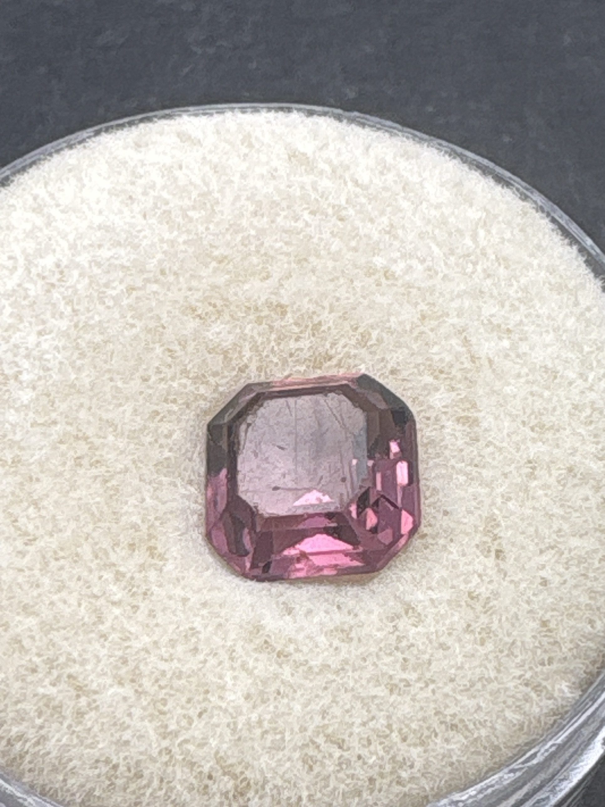

The Gem Drawer › No. 149

A square octagonal step cut in purplish pink-mauve.
| Catalogue no. | #149 |
|---|---|
| As labeled | UNIDENTIFIED - purplish-pink square/octagonal emerald-cut stone (no label; visual ID only, possibly rhodolite garnet, pink-purple tourmaline, or spinel - see notes) |
| Shape / cut | Square / octagonal emerald cut |
| Weight | Not recorded |
| Measurements | Not recorded |
| Colour | Purplish-pink / mauve |
| Clarity / condition | Not recorded |